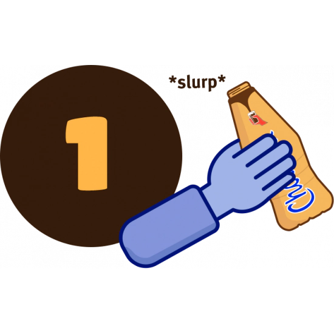
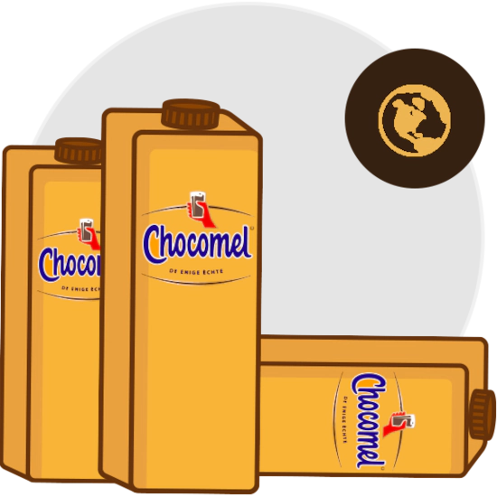
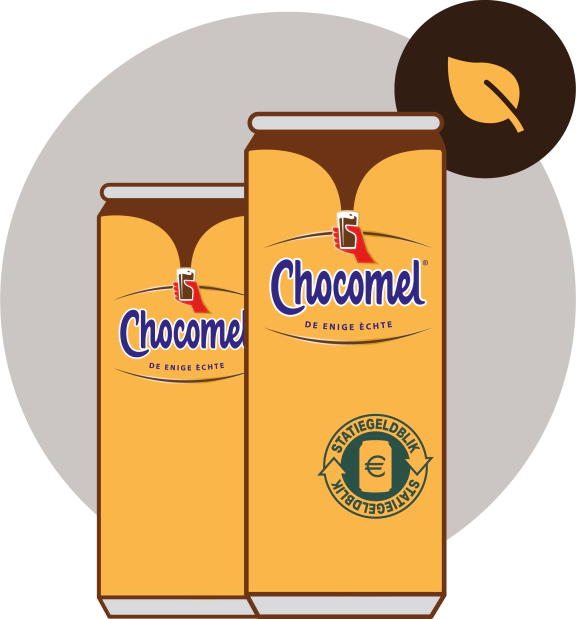
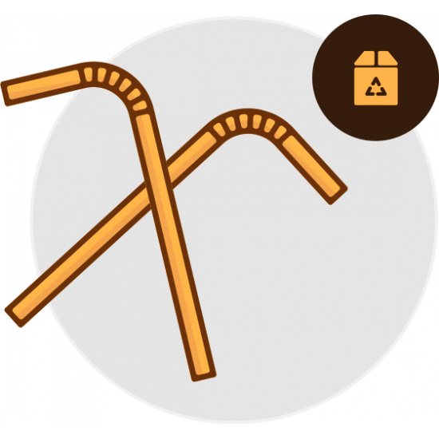
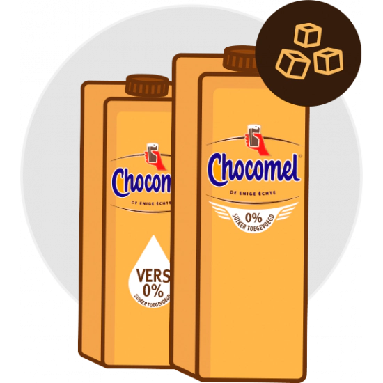
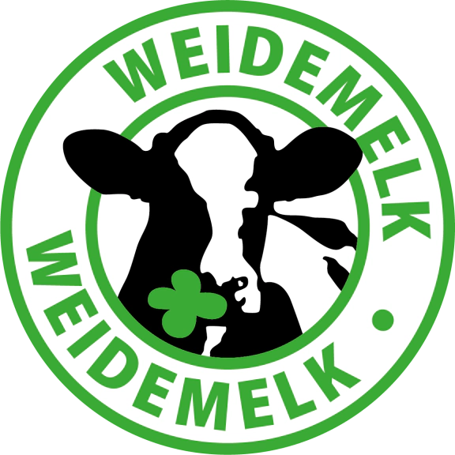
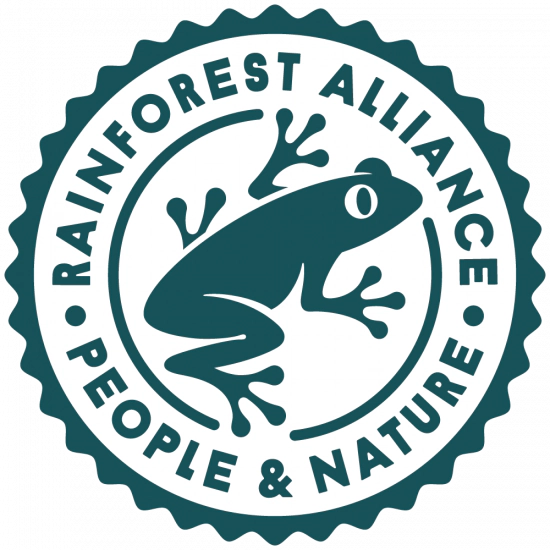

Bij Chocomel vinden we dat je zoveel mogelijk momenten moet pakken om te genieten, want ja, daar draait het leven om toch? Maar hoe belangrijk dat genieten ook is, we mogen nooit vergeten dat we maar één aarde hebben. Ook wij realiseren ons dat we sporen op de aarde achterlaten. Ons doel is daarom om onze impact zo klein mogelijk te maken; van de productie van onze heerlijke Chocomel tot aan de materialen waarin het verpakt wordt. We zijn er nog niet, maar zetten elke dag weer een stapje in de goede richting.
Daar houdt onze ambitie niet op. In 2050 willen we nóg een stap verder zijn, namelijk 100% circulaire verpakkingen. Een circulaire verpakking kan steeds opnieuw gerecycled worden, zodat er steeds weer nieuwe producten van gemaakt kunnen worden. We vertellen je graag hoe we deze ambitie willen bereiken!
De Chocomel flesjes (excl. sleeve en dop) zijn gemaakt van 100% gerecycled plastic. Voor de dop en sleeve is dit nog niet mogelijk, maar we zijn druk bezig om dat te fixen!
Wij zijn binnen de zuivelbranche van Nederland de allereerste geweest met flesjes van 100% gerecycled plastic. Daar mogen we best trots op zijn!
Onze flesjes worden gemaakt van het plastic van gerecylcde plastic flessen. Onze flesjes met de dop erop (zonder de sleeve) kunnen zelf ook weer worden gerecycled in het afvalsorteercentrum. Daarna worden ze weer omgetoverd tot nieuwe flessen en andere plastic producten, zoals petten en schoenen!
*Uitgezonderd de sleeve en de dop. Hier wordt nog aan gewerkt!

Het recyclen van de flesjes kunnen we niet alleen. Hier hebben we jouw hulp hard bij nodig! Bijvoorbeeld met het verwijderen van de sleeve. Een beetje technisch, maar als de sleeve er nog omheen zit, herkent de afvalsorteermachine het plastic flesje niet. Het flesje wordt dan niet optimaal gerecycled. En dat is zonde van alle verzamelde flesjes! Dus een liefdevol verzoek nadat je van onze Chocomel hebt genoten: verwijder de sleeve van het flesje en plaats de dop terug op de fles. Dan mag zowel het flesje mét dop als de losse sleeve bij het plastic afval. We zijn achter de schermen druk bezig om ook de sleeve recyclebaar te maken!
Naast dat de sleeve belangrijke informatie zoals de productnaam, ingrediënten en barcode bevat, houdt deze het product ook langer houdbaar. Het label bedekt de hele fles en houdt zo licht tegen. Hierdoor blijft de smaak van onze Chocomel langer goed en voorkomen we voedselverspilling. Gelukkig maar, want Chocomel is toch veeeeeel te lekker om weg te gooien ;D
Onze multipacks met blikjes krijgen in een plaats van een plastic verpakking, een kartonnen verpakking. Dit betekend jaarlijks 4.400 kilo minder plastic, wow!
Onze literpakken worden voor 89% gemaakt van plantaardige materialen en zijn recyclebaar. Nu met nieuwe dop die aan de verpakking vast blijft zitten! De vastzittende dop zorgt ervoor dat er minder verdwaalde doppen in de natuur terechtkomen, ook wel bekend als zwerfafval. Bovendien is recyclen een stuk makkelijker als de dop vast zit aan de verpakking omdat het sorteer systeem deze nu beide in één keer kan herkennen!
Wist je dat blik een van de best recyclebare materialen is? Ook blijft onze Chocomel hierin langer goed omdat het zuurstof en licht buiten houdt. Zo voorkomen we verspilling wat weer een mooie win-win is. Wist je ook dat er nu statiegeld op blik zit? vergeet je Chocomel blikjes niet terug te brengen om het statiegeld terug te krijgen.
Onze rietjes zijn gemaakt van FSC gecertificeerd papier. Zo besparen we samen met Campina, Optimel en Fristi jaarlijks meer dan 100 miljoen plastic rietjes. Dat is ruim 23.000 kilometer en 57.000 kilo aan plastic!
En voor die momenten dat je wat bewuster wilt genieten, is er chocomel 0% suiker toegevoegd. Minder suiker met nog steeds de lekkere smaak van Chocomel!

Chocomel ‚ù§Ô∏è koeien! ‚ÄúBij groene weiden horen grazende koeien.‚Äù En zo is het maar net! De melk die wij gebruiken om de meeste van onze Chocomel producten te maken, is afkomstig van koeien die vanaf het voorjaar tot in het najaar ten minste 120 dagen per jaar, minimaal 6 uur per dag in de wei lopen. H√©√©l belangrijk, want zonder koeien geen Chocomelüòâ

De kartonmnen verpakkingsmaterialen van Chocomel zijn FSC gecertificeerd. Dit betekend dat deze materialen oorspronkelijk uit verantwoord beheerde bossen komen. FSC is wereldwijd de organisatie die zich hiervoor inzet, zodat economisch, ecologische en sociale belangen in balans zijn. FSC, onze dank is groot! Meer weten? kijk kijk op
www.fsc.org We zijn trots dat al onze productne het Rainforest Alliance keurmerk dragen! Wat dit betekend? Wij kopen rainforest Alliance gertificeerde cacao in, deze wordt veraardigd volgends de drie pijlers van duurzaamheid: sociaal, economie en milieu. Belangrijke focuspunten zijn natuurbehoud en het welzijn en goed inkomen van de boeren.
Kijk op www.rainfores t-alliance.org